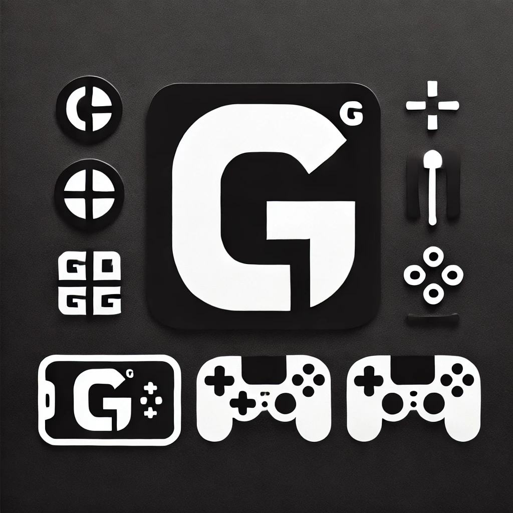

Over Game-G
Welkom bij Game-G, jouw one-stop-platform voor alles wat met gaming te maken heeft! De tweede "G" in onze naam staat voor Guides, en dat is precies wat wij bieden: uitgebreide en toegankelijke gidsen voor gamers van alle leeftijden en niveaus.
Onze Missie
Gaming is een wereld vol avontuur, uitdagingen en plezier. Onze missie is simpel: gamers ondersteunen met betrouwbare tips, tricks, strategieën en informatie die hen helpen om het maximale uit hun favoriete games te halen. We willen jouw succes en plezier vergroten, ongeacht of je speelt op een console, pc of mobiel apparaat.
Wat Maakt Ons Uniek?
Bij Game-G onderscheiden we ons door onze diverse content, toegankelijkheid en passie. Of je nu beginner bent of een doorgewinterde gamer, wij hebben iets voor jou. Onze community brengt gamers samen om kennis en ervaringen te delen.
Hier is waarom je voor Game-G kiest:
-
Diverse Content: Van walkthroughs en strategieën tot tips en nieuws over de nieuwste releases.
-
Toegankelijkheid: Onze gidsen zijn helder en geschikt voor alle gamers, jong en oud.
-
Community Focus: Wij stimuleren interactie en het delen van kennis tussen gamers.
-
Passie: Onze gidsen worden geschreven door gepassioneerde gamers die hun ervaringen met jou delen.
Wat Kun Je van Ons Verwachten?
Bij Game-G vind je een breed scala aan content, waaronder:
-
Tips en Tricks: Handige aanwijzingen voor een voorsprong in je games.
-
Walkthroughs: Stap-voor-stap begeleiding door de meest uitdagende games.
-
Strategiegidsen: Diepgaande analyses en tactieken om je te helpen winnen.
-
Reviews en Nieuws: Blijf op de hoogte van de laatste trends in gaming.
-
Community Features: Deel tips en ervaringen met medegamers.
Waarom Game-G?
Gaming is meer dan een hobby – het is een passie en een manier om te verbinden. Bij Game-G willen we dat iedere gamer zich gesteund voelt en optimaal kan genieten van zijn of haar favoriete spellen. Samen bouwen we aan een community waarin iedereen welkom is, van casual spelers tot hardcore fans.
Sluit je aan bij Game-G en ontdek een wereld vol tips, tricks en inzichten. Samen brengen we jouw gaming naar een hoger niveau!
Bronnen
Dit zijn de bronnen:
- Tristan (Maker)
- Aydin (Maker)
- W3Schools (Toturials)
- Youtube (Tutorials)
- Google (Voor de afbeeldingen)
- Chatgpt (Voor de verbetering van de guides)